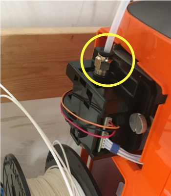
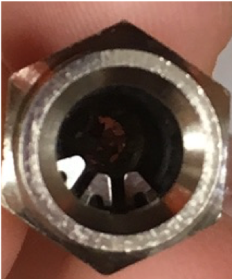

１２０個が目標ですが、もし機械トラブルで足りなかったら、調整はできる計画なので今のところ順調です。
残りの作業は…針金の購入、傘の骨組みの大きさ調整、実際の組み立て（パーツにする）、動画撮影

今回３Dプリンターの故障により、ペースダウンしましたが、２つとも直し、現在４台稼働で行なっています。


物自体を作る研究。
デジタルファブリケーションの使い方をマスターしながら自分が作れるものの幅を増やしたい。
前期の目標であったレシピ作り等に関連する項目を取り扱いたい。
デザインの手法としてまだ出たばかりであるこの手法を研究して、デザインに新しい可能性をもたらせないか可能性を試したい。
人とものづくりの関わりに関する研究。最近ではDIYなど自分でものを作る人が話題だが、それでもものづくりを楽しむ人口はまだ限られていると思う。
そこで歴史的な背景や現代の状況を観察したりすることを通じてものづくりの楽しさを人に伝えられる方法はないか探っていきたい。
・ジェネレーティブデザインの実践・結果報告
・ホームページの更新